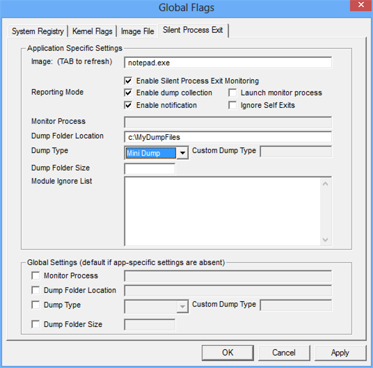

Beginning in Windows 7, you can use the Silent Process Exit tab to enable and configure monitoring of silent exit for a process.
Settings that you specify in the Silent Process Exit tab are saved in the registry and remain effective until you change them.
 To enable and configure silent process exit monitoring
To enable and configure silent process exit monitoring
-
Click the Silent Process Exit tab.
The following screen shot shows the Silent Process Exit tab in Windows 8.

-
In the Image box, type the name of an executable file, including the file name extension, and then press the TAB key.
This activates the check boxes on the Silent Process Exit tab.
-
Specify your preferences by selecting or clearing check boxes and by entering values in text boxes.
-
When you specified all of your preferences, click Apply.
Related topics